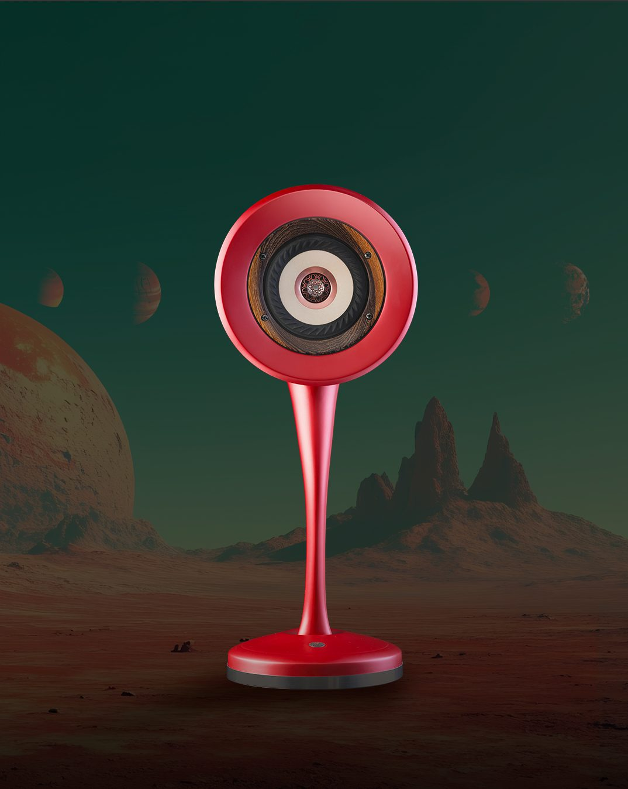

FeaturedÖne Çıkan
Fair · Munich · 2024Fuar · Münih · 2024
Munich High End 2024 — ten years on the world stageMunich High End 2024 — dünya sahnesinde on yıl
Since 2015, Once Custom Sound has been a regular presence at the world's most prestigious high-end audio fair. Each year the stand grows quieter, more deliberate — letting the objects speak for themselves.2015'ten bu yana Once Custom Sound, dünyanın en prestijli high-end audio fuarında düzenli olarak yer alıyor.
May 2024→